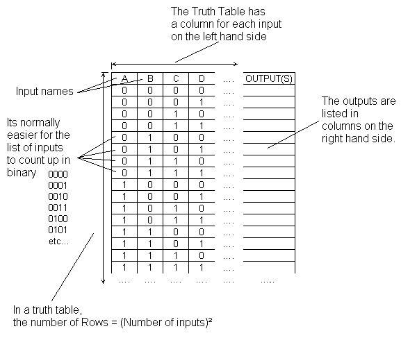

Truth Table
Understanding Truth table
Truth tables help understand the behaviour of logic gates
- They show how the input(s) of a logic gate relate to its output(s).
- The gate input(s) are shown in the left column(s) of the table with all the different possible input combinations. This is normally done by making the inputs count up in binary.
- The gate output(s) are shown in the right hand side column.
Truth Table Daigram

Drawing Truth Tables for Combined Gates
Truth table cab also help understand the behaviour if combinations of logic gates linked together.
- They are drawn in the same way as before but this time adding more colomns in between the input and output columns.
- Each of the columns show the outputs of stages in the logic circuit.